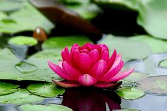

Lotus

As of 2026, the lotus remains a globally recognized icon. It is the national flower of India, symbolizing purity and spiritual awakening. In the culinary world, Lotus Biscoff biscuits have reached new popularity following a major manufacturing expansion into India. Additionally, Lotus Cars continues to lead in luxury automotive innovation with its 2026 model lineup, including the updated Emira and the electric Emeya.
Sunflower

As of 2026, the sunflower (Helianthus annuus) is a global symbol of happiness, loyalty, and environmental resilience. Beyond its beauty, it is a vital economic crop; global production for the 2025-2026 season is forecast to reach approximately 56.2 million metric tons, driven by top producers Russia and Ukraine. Environmental Utility: Sunflowers are "hyperaccumulators," used in phytoremediation to extract toxic metals like lead and radiation from soil.
Economic Impact: High-oleic varieties are increasingly favored for heart-healthy cooking oils.
Lily

"Lily" most commonly refers to the graceful, often fragrant, flower from the Lilium genus, known for its significant cultural and symbolic meanings. It is also a popular name used for various brands and products, including medicines and electronics.True lilies (genus Lilium) are perennial plants that grow from bulbs and produce large, showy flowers in a variety of shapes and colors. They are native to temperate regions of the Northern Hemisphere and are prized as ornamental plants and cut flowers.
Daisy

As of 2026, the daisy (Bellis perennis) is a global symbol of innocence, loyalty, and new beginnings. Its name, derived from "day’s eye," reflects its habit of opening at dawn and closing at dusk.
Daisies are versatile and sustainable, featuring:
Structure: Each "flower" is actually a collection of many tiny florets.
Economic & Ecological Value: They are essential in floristry and attract vital pollinators like bees.
Rose

As of 2026, the rose (Rosa) remains the world’s most iconic flower, symbolizing love and beauty. Beyond aesthetics, it is a commercial powerhouse; the global rose market is projected to reach $11.64 billion by the end of 2026, driven by high demand in the perfume and floristry sectors.
Key uses in 2026 include:
Cosmetics: Rose oil and rosehip seed oil are staples in organic skincare for their anti-aging properties.
Symbolism: It is the national flower of countries like the USA and the UK.